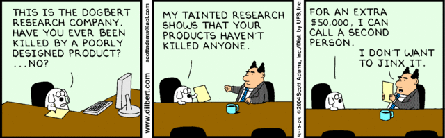
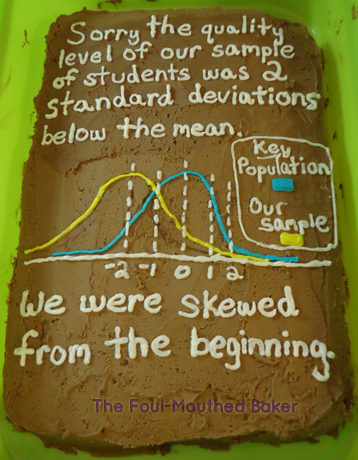
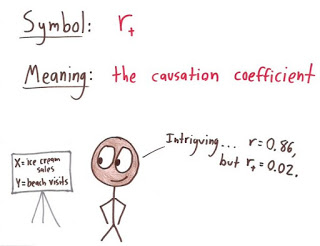

Gleaned from multiple sources (FB, Pinterest, Twitter, none of these belong to me, etc.). Remember, if your students can explain why a stats funny is funny, they are demonstrating statistical knowledge. I like to ask students to explain the humor in such examples for extra credit points (see below for an example from my FA14 final exam).
 |
| Using xkcd.com for bonus points/assessing if students understand that correlation =/= causation |
What are the numerical thresholds for probability?
How does this refer to alpha? What type of error is being described, Type I or Type II?
What measure of central tendency is being described?
|  |
| Dilbert: http://search.dilbert.com/comic/Kill%20Anyone |
Sampling, CLT
|  |
| http://foulmouthedbaker.com/2013/10/03/graphs-belong-on-cakes/ |
Because control vs. sample, standard deviations, normal curves. Also,"skewed" pun.
If you go to the original website, the story behind this cakes has to do with a section of crappy students...so that is kind of funny and therapeutic for us teachers.
NOTE: The website the cake example comes from contains a lot of NSFW language. Which I, personally, have no problem with, but you might.
 |
| http://www.phdcomics.com/comics.php?f=1793 |
Because bar graphs, error bars, and understanding the joke behind this graph.
 |
| http://smbc-comics.com/index.php?id=3732 |
What kind of error, Type I or Type II?
|
| http://wilwheaton.net/2015/11/wil-cant-draw-teachable-moment/ |
Reliability, n-size
|  |
| https://mathwithbaddrawings.com/2016/04/27/symbols-that-math-urgently-needs-to-adopt/ |
What does correlation give us? What does it not?
What does the r^2 here indicate? Why would it be difficult to guess the direction of the relationship?
What is the joke here? For more rigor: What does et al. stand for? What are the APA rules for when to use et al.?


 What is the joke here? For more rigor: What does et al. stand for? What are the APA rules for when to use et al.?
What is the joke here? For more rigor: What does et al. stand for? What are the APA rules for when to use et al.?


{kind=link}
{kind=link}
{kind=link}
{kind=link}
{kind=link}
{kind=link}
{kind=link}

{kind=link}
Tuesday's are better with Jess. No bias here!
ReplyDelete